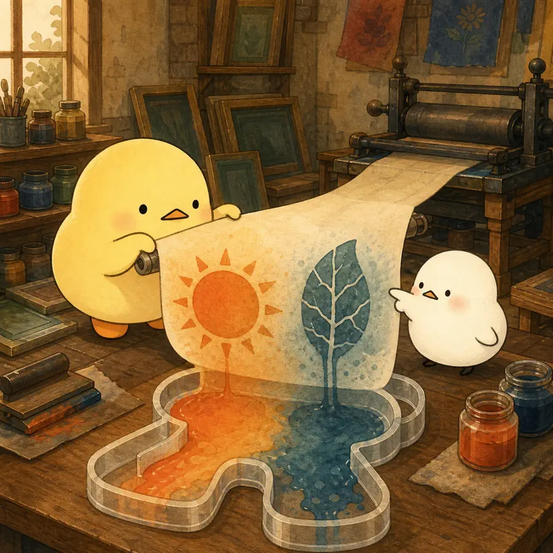
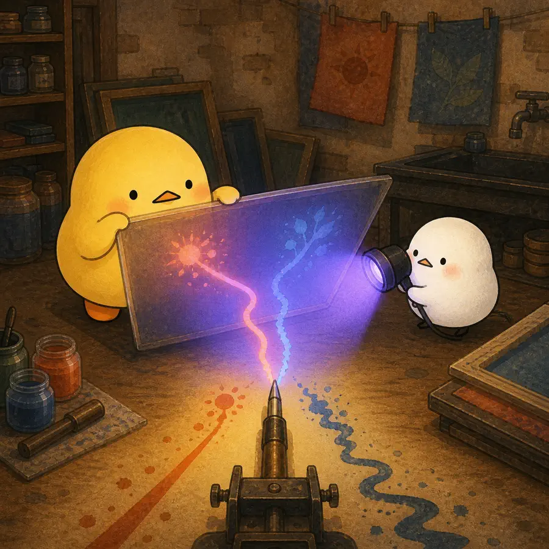
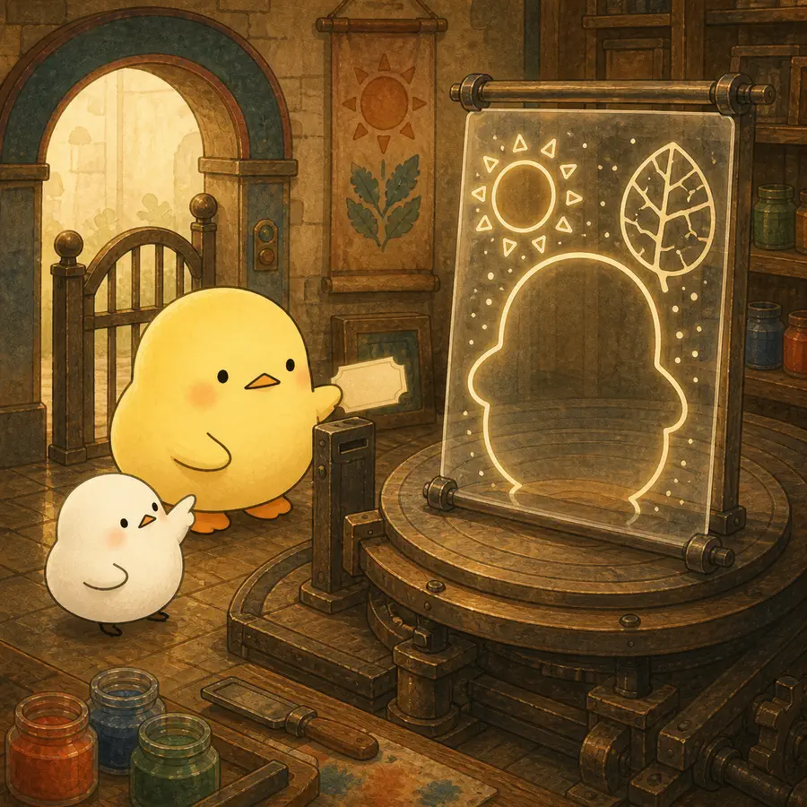
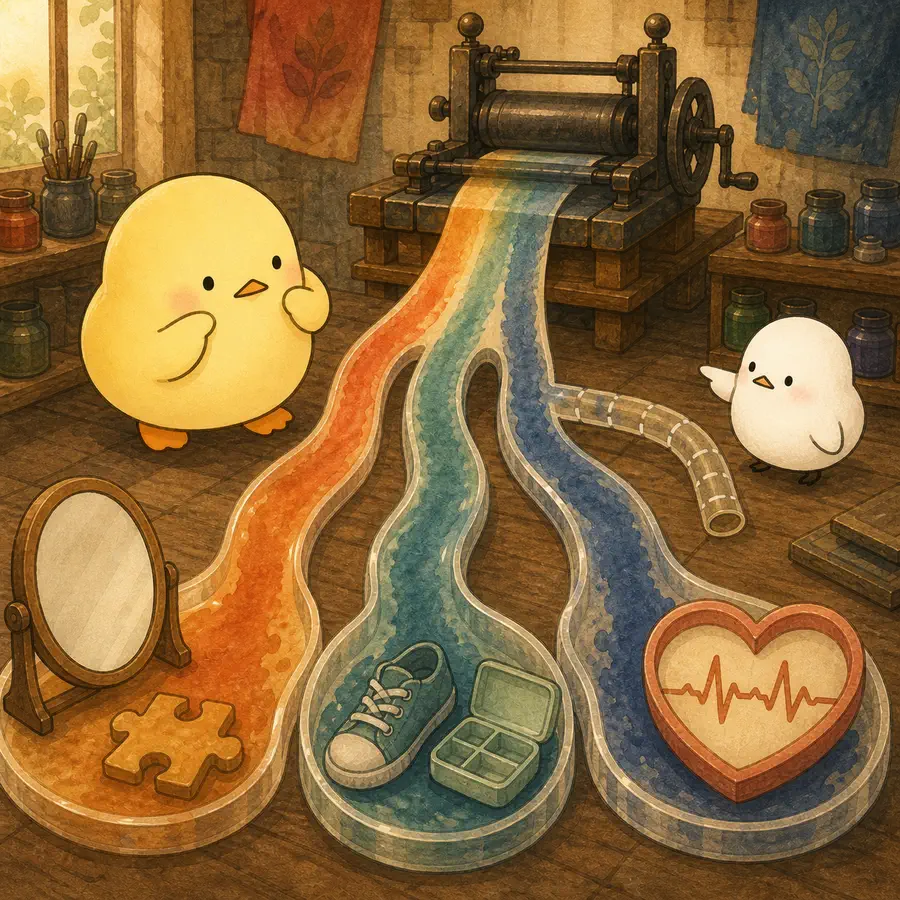

ILLUSTRATED OVERVIEW
4컷으로 읽는 고정관념 체화 이론
나이 고정관념이 문화에서 개인 안으로 들어와 건강과 기능에 닿는 네 단계를 따라갑니다.
옆으로 넘겨 4컷 보기
-

나이 고정관념은 자신을 겨냥하기 전부터 생애에 걸쳐 내면화된다.
-

고정관념은 의식적으로 알아차리지 못해도 기능에 영향을 줄 수 있다.
-

노년이 자기 정체성과 연결될 때 고정관념의 자기관련성이 커진다.
-

영향은 심리·행동·생리 경로를 거칠 수 있지만 하나의 완결된 인과사슬은 아니다.